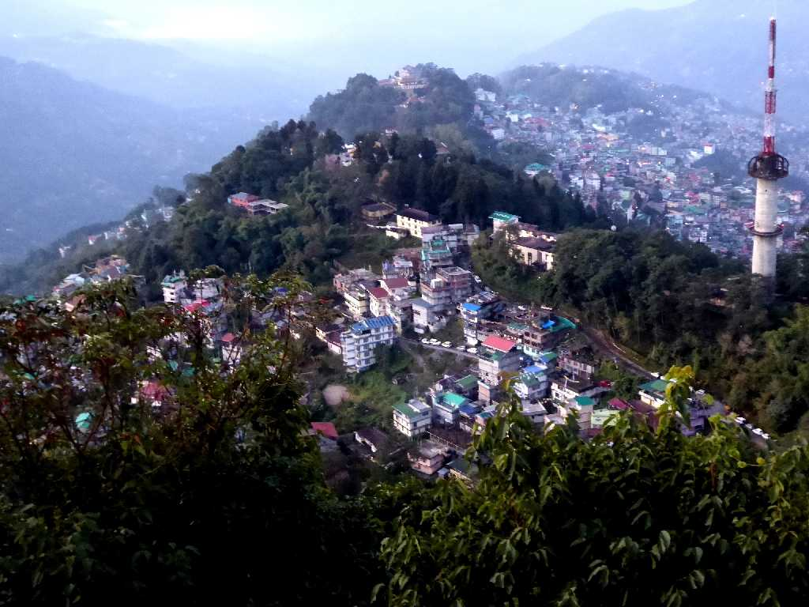
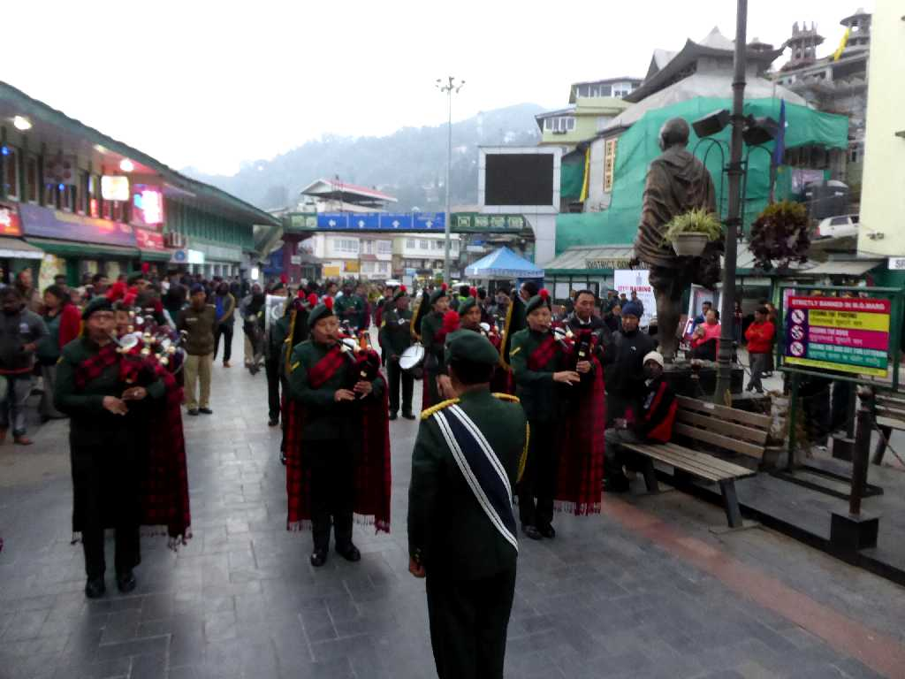
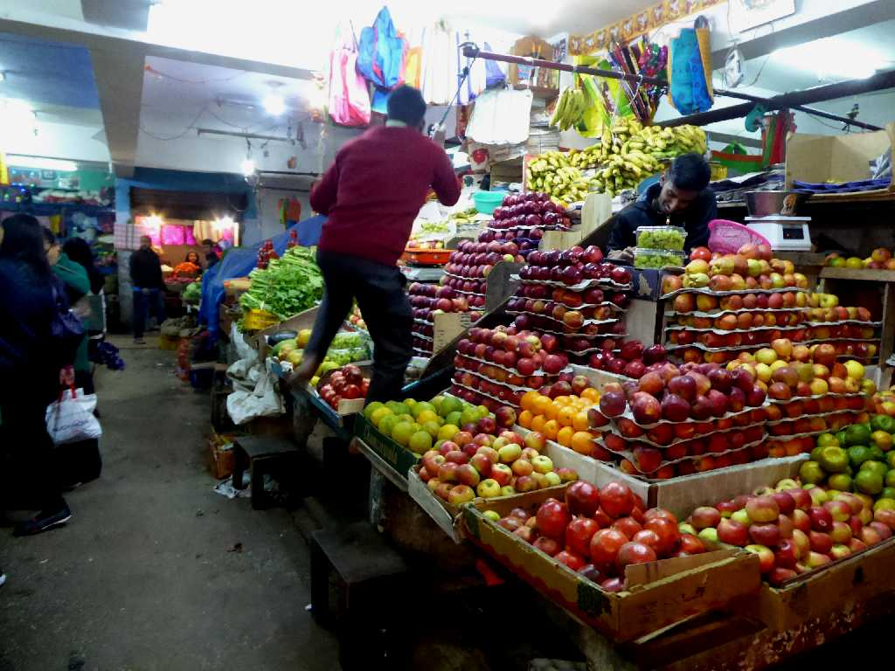

Gangtok from Ganesh Tok Sikkim
シッキム王国の首都として栄え今はインドのシッキム州の州都となっている

Main street Gangtok
チベット仏教ニンマ派のシッキム王国ナムゲル朝は１９世紀にはイギリスの保護国となった

Lal Bazar Gangtok
活気あふれる地元の市場ラルバザール
November 27 2017 Gangtok
山間にある坂と階段の街ガントク